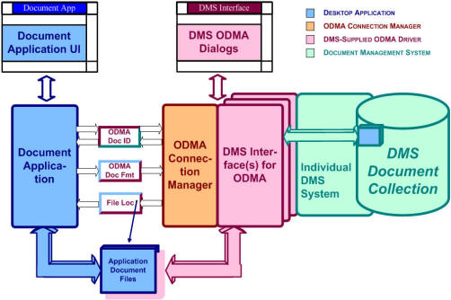

1.1
In 1994, ODMA 1.0 delivered smooth integration between document-management systems and document applications on the desktop.
1.2 Users of
ODMA-aware desktop
applications can operate with documents from locally-connected
document-management systems in the same way that file-system
documents are used. It is not necessary to leave the
desktop application in order to interact with
document-management functions that apply to the document being
worked on.
1.3
Developers of document-management systems can provide a single
ODMA-compliant desktop component to integrate with every ODMA-aware
application on the desktop.
1.4
ODMA integration separates all document-management-specific
behavior from the desktop application, and vice versa.
ODMA document applications don't have to be implemented with any
assumptions about how a DMS stores files, how it creates
documents, how it finds documents, and how it retrieves
documents.
1.5
The desktop application doesn't have
to implement any interactions with the operator about finding and storing
documents in the DMS. The DMS provides all user dialogs
that may be needed in order to carry out requests from the document application.

Figure 1. ODMA Integration between application and DMS
1.6 The single ODMA Connection
Manager provides plug-and-play connection between all ODMA-aware
applications and all DMS interfaces available on the same
desktop computer.